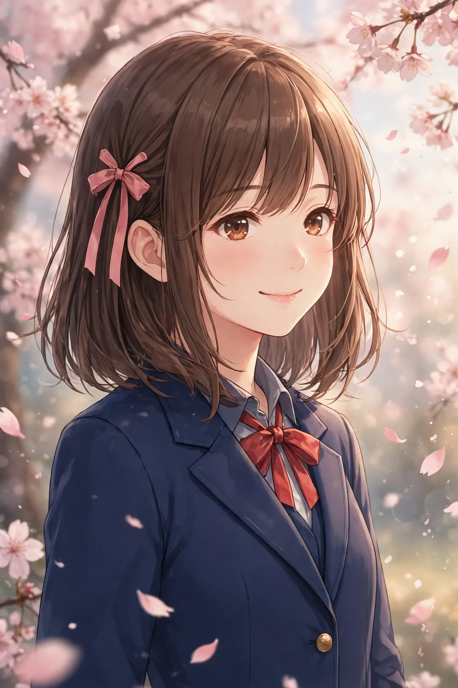

桜色メモリアル
〜 ときめき学園物語 〜
私立桜丘黒羽学園、高校3年の春。「卒業式の日、校舎の屋上で告白すると恋が実る」という神話のあるこの学園で、最後の1年が始まる。



❓ あそびかた
・1ターンは1週間。4月から翌年3月の卒業まで、全48週間を過ごします。
・毎週コマンドを1つ選ぶと、パラメータが上がり、ヒロインと出会うことがあります。会話の選択肢で好感度が変わります。
・年間行事が目白押し（全46種）：夕日の下校、屋上の伝説、伝説の桜の下、体育祭、弁論大会、球技大会、梅雨の図書室、水泳大会、七夕、期末テスト（赤点だと補習！）、海、夏祭り、プラネタリウム、水族館の夜、看病、線香花火、文化祭準備、文化祭（後夜祭のフォークダンス付き）、ハロウィン、修学旅行、音楽室コンサート、紅葉の放課後、スキー、雪の日の図書室、マラソン大会、初詣、クリスマス、冬のイルミネーション、合格お守り、誕生日、チョコ作りの試食係、節分、バレンタイン、寄せ書き、ホワイトデー、卒業前日の屋上の誘い、二人三脚の練習、期末前の勉強会、夏休みの計画、夏休みの夜の電話、文化祭の買い出しと片付け、修学旅行の準備、そして卒業式。各行事は場面が細かくなり、翌週には「余韻」のひとこまも入るので、物語は少しずつ進みます。
・各ヒロインには4章立ての「物語」があります。好感度が上がると、出会い→秘密や悩み→本音、と物語が進みます（右パネルの📖表示）。
・ヒロインのプロフィール（誕生日・好きな物・喜ぶプレゼント等）は好感度パネルの「📋 プロフィール」から見られます。好物をプレゼントすると好感度が大きく上がります。
・他の子と仲良くしたり放置すると「傷心度💔」が上がります。傷心度が高いと恋愛エンディングに届きません。会いに行ってケアしましょう。
・絵はコマンドを押すたびに切り替わります。全員15枚ずつ・合計60枚（通常・笑顔・照れ・私服・浴衣・行事・体操着・部活／夏服・冬服・スキー・看病・プラネタリウム・海辺の夏服・卒業式・桜の下）があり、場面に合った絵が出ます。水泳・海の場面は、水着の代わりに体操着・夏服・海辺の夏服で表現しています。画面右上の「📷」表示で今の絵が分かります。
・パラメータは右側パネルに常時表示：基本10種（体力・学力・運動・魅力・気品・芸術・感受性・社交性・モラル・ストレス）＋系統別評価5種（学業／運動／文化／社交／生活、S〜Dランク付き）＋細かなスキル6種（礼儀作法・文学・音楽・料理・掃除洗濯・気だて）の全21項目。コマンド14種で細かく育ちます。
・好感度が上がると「デートに誘う」が成功しやすくなります。相手の好きな場所を選ぶのがコツです。デート先は14か所（プラネタリウム・水族館、海・プール・那珂川は夏のみ。好感度と親密度が上がるとお部屋デートも）。舞台は栃木県大田原市・黒羽の町。黒羽城址公園、黒羽図書館、黒羽芭蕉の館など、町の名所も登場します。8月には大イベント「芭蕉の里くろばね夏まつり・市民花火大会」も。何もない週でも、黒羽の町では小さな出来事が起こります。松尾芭蕉の句碑10か所を巡る「句碑めぐり」と、名所21か所の制覇を目指す「黒羽めぐり」実績もあります。
・ストレスが100になると倒れて1週間休みます。休養も大事です。
・長い間ほったらかしにしたヒロインは好感度が少しずつ下がります（💣注意）。
・卒業式の最後は、校舎の屋上へ。「卒業式の日、屋上で告白すると恋が実る」という学園の神話――誰を待つかは、あなたの1年しだいです。
・BGMはビープ音のメロディが場面ごとに流れます（オープニング／通常／イベント別／デート／エンディングなど、場面ごとに切り替わります）。音のON/OFFは本編画面の「🔊 音」ボタンで切り替えます。最初のタップで鳴り始めます。
・関係値は4つに分かれました：好感度（好き）・信頼度（本音を話せるか）・親密度（一緒に過ごした時間）・嫉妬度（他の子と仲良くすると上がる）。好感度が高くても信頼度が低いと、卒業の告白は実りません。
・プロフィールは好感度で5段階に開放（Lv1 基本情報→Lv2 性格や好み・関係値→Lv3 メールアドレス→Lv4 電話番号→Lv5 秘密の一面）。開放された時はシステム通知が出ます。
・ヒロインが主人公を呼ぶ呼び方は好感度で変わります。最初は「苗字くん」、好感度40以上で「名前くん」、80以上であだ名で呼んでくれるようになります（右パネルに今の呼び方を表示）。変わった時はシステム通知でもお知らせします。
・連絡先が開いたら「電話・メール」コマンドで連絡できます。過去の出来事を彼女が覚えていて、会話に出てくることもあります。
・好感度60・親密度35以上で、デート先に「お部屋デート」が追加されます（専用の部屋の絵あり）。家の中でのイベントです。
・体力やストレスを放置すると病気で寝込みます。寝込んだら「休養する」で回復。好感度・信頼度の高いヒロインが見舞いに来てくれます（低ければ誰も来ません…）。
・セリフ枠にはヒロインの言葉のほか、プレイヤーの言葉と【システム】メッセージも表示されます。画面にはシステム通知欄も追加されました（プロフィール開放・好感度の急上昇／低下・体力低下の警告など）。
・デートの誘いやイベントの成否は、能力値＋好感度＋信頼度などから計算した成功率と乱数で決まります。数値を上げても必ず成功にはなりません。
・新イベント追加：相合傘（好感度で4段階に分岐：断られる／普通／肩が触れて照れる／相手から手をつないでくる）、雨宿り、迷子の子供を助ける、勘違い・誤解、ケンカ・仲直り、秘密を知ってしまう、補習、ライバル（転校生）登場、進路・将来の夢、努力が認められる、やきもち、お金が足りずデートを断念、など。イベントは「月→好感度→能力値」の入れ子条件で発生します。
・所持金の仕組みが入りました。デートにはお金がかかり、カフェのバイトで稼げます。
・実績（全14種）とコンプリート率は回想アルバムで確認できます。エンディングは恋愛成就のほか、ライバルエンド、親友エンド、人生型エンディング（仕事成功型・趣味没頭型・友人関係充実型・独身自由人型・何も成し遂げられなかった型）など多彩になりました。卒業すると周回特典がついて、次の1年が少し有利になります。
・セーブは3スロット＋ファイル書き出し。スロットはこの端末のブラウザに自動保存されるので、別の日でもそのまま続きから遊べます。別の端末へ移す時はファイル書き出しを使ってください。
桜色メモリアル
〜 ときめき学園物語 〜
卒業式の日、屋上で待つのは――誰？
私立桜丘黒羽学園、高校3年の春。「卒業式の日、校舎の屋上で告白すると恋が実る」という神話のあるこの学園で、最後の1年が始まる。勉強も、行事も、恋も。全部を駆け抜けた先で、あなたは誰と卒業式を迎えますか。
🎵 主題歌は YouTube でも公開中です
📖 ストーリー
舞台は、栃木県大田原市・黒羽の町。桜の名所として知られる私立桜丘黒羽学園。主人公はこの春、高校3年生になります。隣の家に住む幼なじみ、部活に打ち込む同級生、図書室で静かに本を読む少女、学園をまとめる生徒会長――出会いは、もう始まっています。
この学園には、代々伝わる神話があります。「卒業式の日、校舎の屋上で告白すると、その恋は必ず実る」。普段は立入禁止の屋上も、卒業式の日だけは生徒会が鍵を開ける決まり。1年後のその日、屋上で待つのは誰なのか、迎えに行くのは誰なのかは、あなたの1年の過ごし方しだいです。
各ヒロインには4章立ての個別ストーリーがあります。出会いから、秘密や悩みに触れる時間、本音が見える瞬間へ。好感度だけでなく、信頼度・親密度を積み重ねることで、物語は少しずつ深まっていきます。ほかの子との距離感を間違えれば、傷心や嫉妬が影を落とすことも。転校生のライバル登場など、恋の波乱も待ち受けています。
1年の流れ
🌸 春（4〜5月）
入学式と桜の下の再会、屋上の伝説、体育祭、弁論大会。新しい1年の幕開けと、最初のときめき。
🌻 夏（6〜8月）
梅雨の図書室、水泳大会、七夕、期末テスト、海、夏祭り、芭蕉の里くろばね夏まつり・市民花火大会、プラネタリウム、水族館の夜。距離が一気に縮まる季節。
🍂 秋（9〜11月）
文化祭と後夜祭のフォークダンス、ハロウィン、修学旅行、音楽室コンサート、紅葉の放課後。彼女の「本音」が見え始める頃。
❄️ 冬（12〜3月）
スキー、初詣、クリスマス、イルミネーション、バレンタイン。そして卒業式――屋上への誘い。
💗 登場人物
隣の家に住む幼なじみ。明るくて面倒見がよく、クラスの人気者。少しお節介で、自分の気持ちは後回しにしがち。小さい頃、桜の木の下で交わした約束を、今も大切にしている。
いつも全力、笑顔がまぶしいテニス部のエース。負けず嫌いで、弱音を吐くのが苦手なため、無理を隠してしまうことも。弱った人を見ると放っておけない、熱くてまっすぐな性格。
静かで本が好きな、人と話すのが少し苦手な少女。でも好きな本の話になると目が輝く。自作の小説のことは、誰にも言えない秘密。雪の日の図書室で、少しずつ心を開いていく。
成績優秀、ピアノも弾ける才女で、学園の生徒会長。凛とした完璧主義者で、期待に応えようと無理をしがち。実は甘いものと猫に弱い一面がある。屋上の鍵を開けるのは、彼女の役目。
主人公（あなた）：名前と誕生日、1年の目標を決めて入学します。誕生日によって伸びやすい能力が少し変わります。
🎮 システム
📊 育成
1ターンは1週間、全48週間。コマンド14種を選んで、基本10種＋系統別評価5種＋スキル6種の全21項目のパラメータを育てます。ストレスを溜めすぎると倒れてしまうので、休養も大切です。
💗 関係値
好感度・信頼度・親密度・嫉妬度の4つで関係が育ちます。好感度だけでは卒業の告白は実りません。放置や浮気な行動は傷心度を上げるので注意。プロフィールは好感度で5段階に開放されます。
🎪 イベント
年間行事46種に加え、相合傘、雨宿り、ケンカと仲直り、ライバル登場など、月・好感度・能力値で分岐する追加イベントも。翌週に「余韻」のひとこまが入ることもあります。
🌹 デート＆プレゼント
デート先は14か所（好感度が進むとお部屋デートも）。相手の好きな場所・好物のプレゼントが効果的です。所持金の仕組みがあり、デートにはお金がかかり、カフェのバイトで稼げます。
📖 回想アルバム
集めた思い出はアルバムでいつでも読み返せます。実績は全14種、コンプリート率も表示。エンディング後は卒業アルバムとして1年の記録がまとまります。
🎓 エンディング
恋愛成就のほか、親友エンド、ライバルエンド、仕事成功型・趣味没頭型などの人生型エンディングまで多彩。クリアすると周回特典がついて、次の1年が少し有利になります。
あそびかた（3ステップ）
- タイトルで「はじめから」を選び、主人公の名前・誕生日・目標を決めます。
- 毎週コマンドを1つ選び、パラメータを育てながらヒロインとのイベントや会話を進めます。選択肢で好感度が変わります。
- 卒業式の日、屋上へ。誰を待つかは、あなたの1年しだいです。
ℹ️ 作品情報
| タイトル | 桜色メモリアル 〜ときめき学園物語〜 |
|---|---|
| ジャンル | 1人用・育成シミュレーション／恋愛アドベンチャー |
| 制作・著作 | Snow Moon Games |
| イラスト | ヒロイン4人×15枚＝合計60枚（assets フォルダのWebP画像） |
| BGM | Web Audioによる場面別8曲の合成演奏 |
| セーブ | 3スロット（ブラウザに自動保存）＋ファイル保存対応 |
| 動作環境 | モダンブラウザ（PC／スマートフォン）。ダークモード対応 |
🔧 管理メニュー説明
『桜色メモリアル 〜ときめき学園物語〜』のメンテナンス用機能の説明です（この説明はゲーム本体の中に組み込まれています）。
作者
制作・著作： Snow Moon Games
本作の企画・プログラム・シナリオを手がけた作者名義です。ゲーム本体のタイトル画面下部にもクレジットされています（その作者名をクリックすると管理メニューが開きます）。本作は全年齢対象の公式版です。画像やセリフを差し替えた改造版は非公式であり、Snow Moon Gamesとは無関係です。
プログラム紹介
『桜色メモリアル 〜ときめき学園物語〜』は、私立桜丘黒羽学園を舞台にした1人用の育成＋恋愛シミュレーションゲームです。高校3年の春から卒業までの全48週間、毎週コマンドを選んでパラメータを育て、ヒロインたちとの物語を進めます。「卒業式の日、校舎の屋上で告白すると恋が実る」という学園の伝説に向かって、最後の1年を過ごす物語です。
| ジャンル | 1人用・育成シミュレーション／恋愛アドベンチャー |
|---|---|
| ヒロイン | 4人（桜井さくら／星野あかり／月島ゆき／藤原りん）、各15枚・合計60枚の差分イラスト、各4章立ての個別ストーリー |
| システム | 全48週間・コマンド14種・パラメータ21項目（基本10＋評価5＋スキル6）・関係値4種（好感度／信頼度／親密度／嫉妬度）＋傷心度・年間行事46種・デート14か所・実績10種・マルチエンディング（恋愛／親友／ライバル／人生型ほか）・周回特典 |
| セーブ | 3スロット（ブラウザの localStorage に自動保存）＋JSONファイルへの書き出し／読み込み対応。周回データ・アルバム収集・管理データも自動保存されます |
| 技術仕様 | 単一HTMLファイル（HTML／CSS／JavaScript、外部ライブラリ不使用）。イラストは assets フォルダの WebP 画像、BGMは Web Audio API による場面別8曲の合成演奏（管理機能でMP3への差し替え可）。ダークモード・スマートフォン表示・モーション軽減設定に対応 |
| 動作環境 | モダンブラウザ（PC／スマートフォン） |
開き方
タイトル画面いちばん下のクレジットで、作者名 Snow Moon Games をクリックすると管理メニューが開きます（点線の下線が目印）。プレイヤー向けのボタン類とは別にしてあるので、通常プレイでは目立ちません。
管理データのセーブ／読み込み
- 管理設定（BGM・上書き・カスタムストーリー）は、この端末のブラウザに自動保存されます。別の端末へ移す時は管理メニュー最下部の「📄 管理データをファイルに保存」で
sakura-memorial-admin.jsonを書き出してください。 - 読み込みは「📥 ファイルから読み込む」から同じファイルを選ぶだけです。ゲーム本体のセーブファイルとは別物で、混ざりません。
- 「全て初期化」で管理データを空に戻せます（確認ダイアログが出ます）。
🎵 BGM差し替え（MP3 URL）
曲ごとにMP3ファイルのURLを指定できます。空欄の曲は標準の合成BGMのまま流れます。指定した曲はループ再生され、音ON/OFFボタンとも連動します。
| キー | 場面 |
|---|---|
opening | プロローグ |
title | タイトル画面 |
daily | 本編の通常時 |
event | イベント全般 |
choice | やきもち・誤解・ライバル・秘密などドキドキ系 |
date | デート・お部屋・電話・メール |
sad | 寝込み・見舞い・ケンカ・病気・別れ |
ending | 卒業・告白・エンディング |
📖 ストーリーNoの体系
ストーリー再生中、画面の右下に小さく No.○○ ・ 現在シーン/全シーン が表示されます。このNoを管理メニューで指定して編集します。
| Noの形式 | 対象 |
|---|---|
P-001 | プロローグ |
EV-02 〜 EV-47 | 週ごとの年間行事（数字＝その行事がある週番号） |
ST-sakura-1 など | ヒロインの物語（ヒロインID＋章番号）。IDは sakura / akari / yuki / rin |
HK-hok_cat など | ほっこりイベント（後ろは内部ID） |
CU-001 など | カスタムストーリー（追加時に付けたNo） |
S-123 形式 | 上記以外のイベント（場面名から自動生成される安定した番号） |
✏️ ストーリー上書き編集
Noを指定して、そのストーリーの絵・セリフ・パラメーター効果を上書きできます。元のコードは書き換えず、再生時に差し替える方式なので、削除すれば元に戻ります。
- 絵のURL：そのストーリーの全シーンの絵を、この画像URLに差し替えます。
- 差分名：
smile/shy/date/yukata/gym/club/winter/ski/sick/planet/sea/grad/endingなど。ヒロインが登場するシーンに適用されます（絵URLが優先）。 - セリフ差替（JSON）：シーン番号（0始まり）→セリフの対応表です。書いた番号のシーンだけ差し替わります。
{"0":"差し替えた最初のセリフ","2":"3番目のシーンのセリフ"}
パラメーター効果（JSON）
ストーリーの終了時に1回適用されます（スキップした場合も適用されます）。使えるキーは次の通りです。
aff：好感度。ヒロインID → 数値。例{"aff":{"sakura":5,"rin":-3}}rel：関係値。trust（信頼度）/close（親密度）/jealous（嫉妬度）。例{"rel":{"sakura":{"trust":3,"close":4}}}stats：基本パラメータ。キー：tairyoku体力 /gakuryoku学力 /undou運動 /miryoku魅力 /kihin気品 /geijutsu芸術 /kansei感受性 /shakou社交性 /moralモラル /stressストレスskills：スキル。キー：reigi礼儀作法 /bungaku文学 /ongaku音楽 /ryouri料理 /souji掃除洗濯 /kidate気だてmoney：所持金（円）。例{"money":500}
{"aff":{"sakura":5},"rel":{"sakura":{"trust":3}},"stats":{"gakuryoku":3},"money":500}
📝 新規ストーリー追加
JSONで1本まるごと追加します。管理メニューの「テンプレート挿入」で例が入るので、それを書き換えるのが早いです。
{
"no": "CU-001",
"title": "放課後の約束",
"turn": 20,
"hero": "sakura",
"minAff": 30,
"fx": {"aff": {"sakura": 5}},
"scenes": [
{"hero": "sakura", "variant": "smile", "text": "放課後、教室にさくらが戻ってきた。"},
{"hero": "sakura", "variant": "shy", "text": "「ねえ、今日は一緒に帰ろう？」",
"choices": [
{"label": "「いいよ」", "fx": {"aff": {"sakura": 3}}},
{"label": "「用事がある」", "fx": {"aff": {"sakura": -2}}}
]}
]
}
| 項目 | 意味 |
|---|---|
no | ストーリーNo（省略すると CU-連番を自動付与）。右下表示と上書き編集で使います |
title | タイトル（場面タグとログに表示） |
turn | 発動する週（1〜48）。指定するとその週の行動時に年間行事より優先して発生します |
month | 発動する月（turn未指定の時のみ）。turnもmonthも無いと、最初の行動時に発生します |
hero / minAff | 対象ヒロインと、必要な好感度（未指定なら条件なし） |
once | 既定は1回のみ（発生済み記録はゲームのセーブデータ側に残ります）。false にすると条件を満たす週に毎回発生します |
fx | ストーリー終了時の効果（上書き編集の効果と同じ書式） |
scenes | シーンの配列。各シーン：hero（絵のヒロイン）/ variant（差分名）/ img（画像URL、あれば優先）/ who（話者名、省略時はヒロイン名）/ text（セリフ。{first}＝主人公への呼び方（話者ヒロインの好感度で「苗字くん／名前くん／あだ名」に変化。{call} も同じ）、{name}＝フルネーム、{last}＝苗字、{nick}＝あだ名に置換）/ sys:true（システム文）/ player:true（主人公のセリフ）/ choices（選択肢：label と fx） |
制限と注意
- 既存ストーリーの分岐ロジックそのもの（好感度で展開が変わる処理など）は上書き対象外です。差し替えできるのは絵・セリフ・終了時効果です。
- 効果は数値データのみです。自由なプログラムは書けません。
- カスタムストーリーの発生済み記録はゲーム本体のセーブデータに残るため、セーブをロードすると「発生済み」状態も引き継がれます。
- JSONの書式が間違っていると、登録時にエラーのトーストが出て登録されません。
ご利用にあたって（免責事項）
『桜色メモリアル 〜ときめき学園物語〜』は、Snow Moon Games が無償で公開するフリーソフトウェアです。
- 本ソフトは現状のまま提供され、動作や品質について一切保証いたしません。本ソフトのご利用により生じた損害について、作者は責任を負いかねます。ご利用は自己責任でお願いいたします。
- セーブデータはお使いの端末内に保存されます。データの消失に備え、大切な記録はファイル書き出しでバックアップしてください。
- 著作権は Snow Moon Games に帰属します。再配布は自由ですが、クレジット表記は変更しないでください。
- 画像や文章の差し替えなどの改造はご自由にどうぞ。ただし、改造されたものは作者とは無関係の非公式版であり、その内容（成人向けの表現を含みます）について作者は一切関与いたしません。法令や公序良俗に反する公開はお控えください。
- 内容は予告なく変更・公開終了する場合があります。サポートやアップデートのお約束はいたしかねますので、ご了承ください。
© Snow Moon Games — 『桜色メモリアル 〜ときめき学園物語〜』